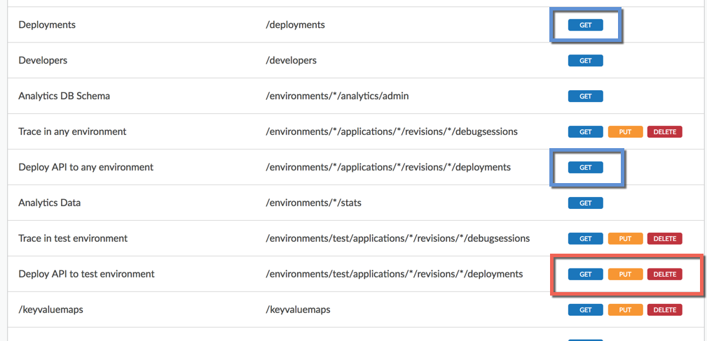

Each Apigee Edge organization comes with a few built-in roles that you can assign to administrative users:
The built-in roles control the level of access in both the management UI and the management API.
To see the permissions set for each built-in role (as an Organization Administrator or a Read-only Organization Administrator), select Admin > Organization Roles > name_of_role in the management UI.
The following example in the management UI shows the permissions for the User role. Notice that it has different deployment permissions:

So what does this mean? What can someone in the User role deploy?
In this example, the most granular permission is the "Deploy API to test environment permission" with a URI of /environments/test/applications/*/revisions/*/deployments. It's the /test/ part that makes it the most specific. It means someone in the User role can deploy any API proxy (/applications/*) with any revision (/revisions/*) to the test environment (/test/).
Someone in this role, on the other hand, would not be able to deploy to any other environment, because of the GET (read-only) permission on /environments/*/, where the wildcard (*) signifies any. (The GET permission on /deployments allows the user to get deployment details with the API).
When a Developer Portal is provisioned for you, another role is added to your organization called Developer Administrator. This role, which includes a single user called devadmin+{org_name}@apigee.com, is solely for the purpose of connecting your Developer Portal to your Edge organization. Because the portal displays your Edge developer apps, API products, and so on, it must stay in sync with your Edge organization by making management API calls that require authentication. The devadmin "user" has the necessary permissions.
The connection between the portal and your Edge organization is configured in Drupal under Configuration > Dev Portal in the Drupal admin menu (you must be logged into Drupal as an administrator). If the Connection Status is shown as "Connection Successful," you won't see the devadmin user in the configuration. However, if the connection is shown as failed, you would enter the devadmin email address and password to reestablish the connection.
Don't add real users to the Developer Administrator role. (In fact, the management UI and API shouldn't let you.) That role should contain only the devadmin user.